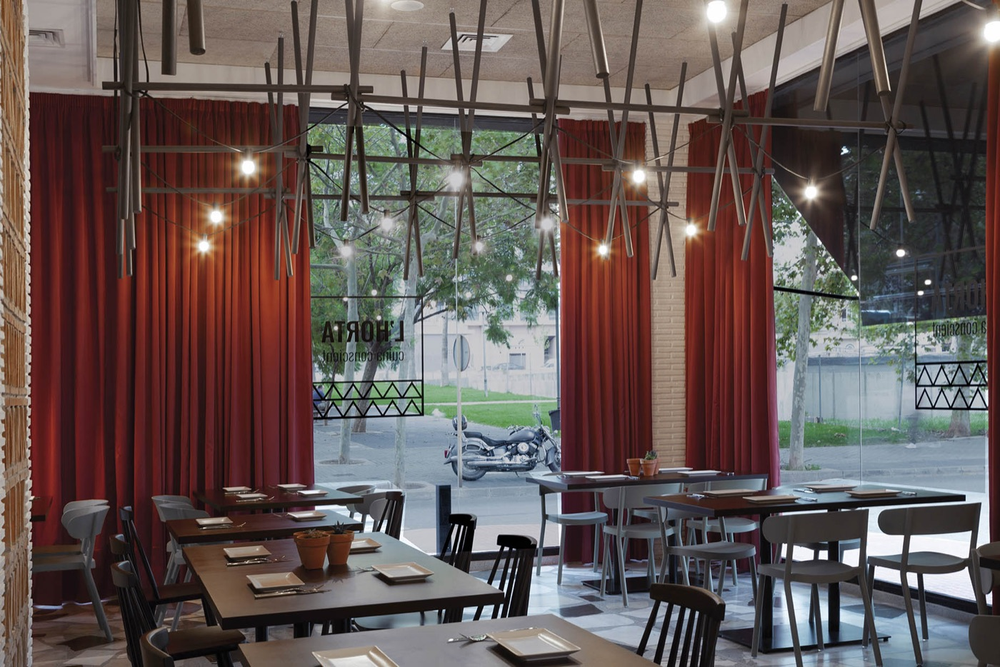
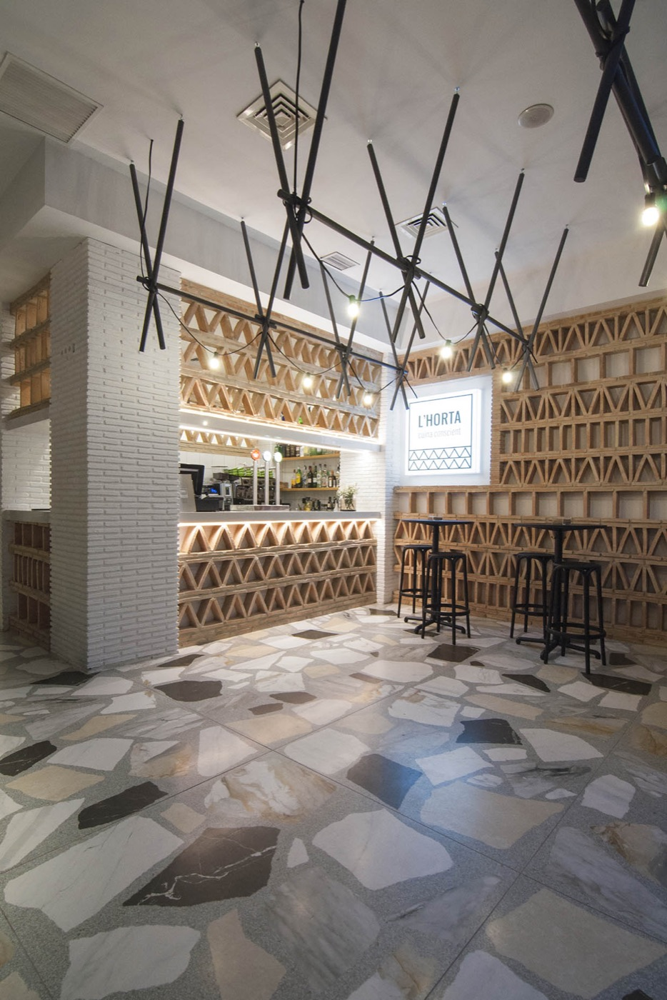
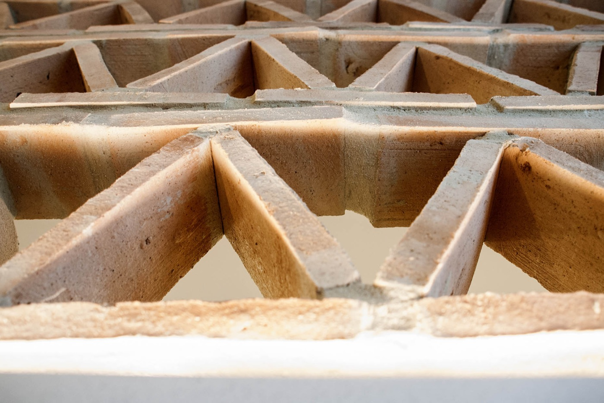
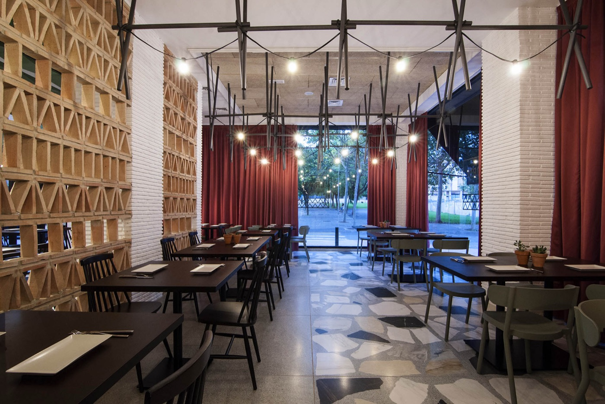

LA VALL D’UIXÓ · CUINA CONSCIENT
De la tierra.
Al horno.
A tu mesa.
Pizza, Mediterráneo y una manera de hacer las cosas: con respeto por el producto, el entorno y las personas.
BUENA COMIDA. BUENA CONCIENCIA.↓
EL SABOR EMPIEZA EN EL ORIGEN
✳
HECHA PARA
disfrutar
SIN PRISAS
disfrutar
SIN PRISAS
01 / EL ARTE DE LA PIZZAARRASTRA Y EXPLORA
01 — NUESTRA ESENCIA
Comer bien.
Sentir mejor.
Creemos en una cocina que empieza mucho antes de encender el horno.
En L’Horta, el Mediterráneo se encuentra con la huerta. Nuestra cocina tiene raíces locales y una mirada consciente hacia lo que nos rodea.
El origen importa. Trabajamos con productos de temporada y de proximidad, con la huerta como punto de partida.

EL MEDITERRÁNEO TAMBIÉN SE SIENTA A LA MESA.03 — TU LUGAR EN L’HORTA
Quédate.
Estás en casa.
Madera, luz y texturas que nos acercan a la tierra. Un espacio para conversar, compartir y dejar que la sobremesa se alargue.
LOS DETALLES TAMBIÉN IMPORTAN
Un espacio
con alma.



04 — NOS VEMOS EN LA VALL
Tu próxima
buena mesa.
ENCUÉNTRANOS
Miguel V. Arnau Abad, 6La Vall d’Uixó · CastellónCómo llegar
RESERVAS Y CONSULTAS
964 697 918 Consulta los horarios actuales al reservar.